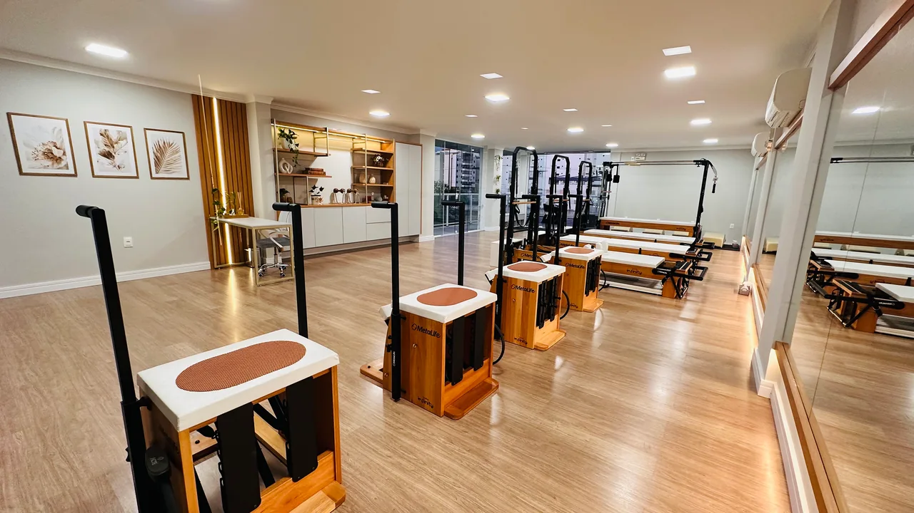
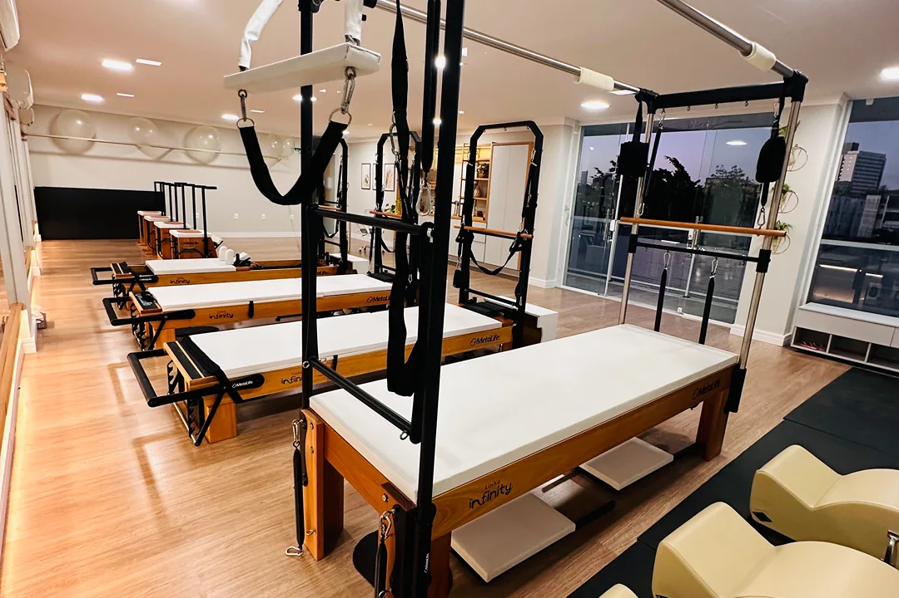
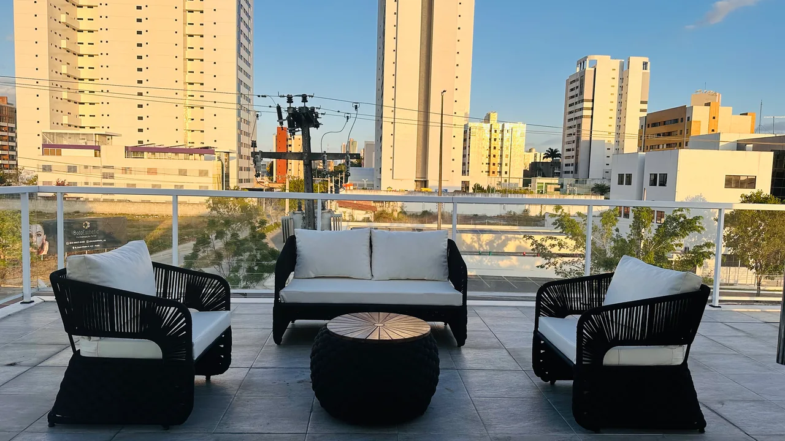

Pilates clássico
Uma prática que reúne os movimentos e os princípios do método Pilates. Saiba mais sobre as aulas do nosso estúdio.

Catolé · Campina Grande, PB
Encontre o seu momento de Pilates clássico em um espaço dedicado à prática, com aparelhos e exercícios no solo.
Quero conhecer o estúdioConheça as modalidades do nosso estúdio e converse com a gente para saber como começar.
Uma prática que reúne os movimentos e os princípios do método Pilates. Saiba mais sobre as aulas do nosso estúdio.
Conheça a prática nos aparelhos que fazem parte do nosso espaço, com diferentes possibilidades de movimento.
O Pilates também acontece no solo. Fale com a gente sobre as opções de prática e a disponibilidade de horários.
Aparelhos em madeira, luz e espaço para se movimentar. Veja um pouco do ambiente que espera por você.


Conte o que você procura na prática e tire suas dúvidas antes de vir ao estúdio.
Entre em contato pelo WhatsApp e fale sobre seu interesse em conhecer o Pilates.
Converse sobre modalidades, valores e os horários disponíveis.
Confirme com a nossa equipe os detalhes para conhecer o espaço.
Fale com o nosso estúdio para conhecer as aulas e combinar sua visita.
Conversar pelo WhatsAppCatolé
Campina Grande, Paraíba
(83) 99622-9464
Localizar o estúdio no mapa ↗Confirme a localização completa e os horários com a nossa equipe antes da visita.
Envie uma mensagem pelo WhatsApp. Vamos conversar sobre a disponibilidade e as modalidades do estúdio.
Fale com a gente e conte o que procura. Nossa equipe pode orientar sobre os próximos passos e a visita ao espaço.
Estamos no Catolé, em Campina Grande. Confirme o endereço completo pelo WhatsApp antes de sair de casa.